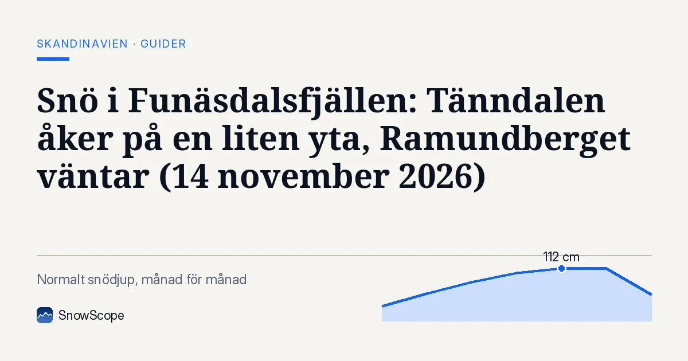

Tänndalen: snö i dag
Tänndalen: snö i dag. Första snön på vintern har kommit till Funäsdalsfjällen. Tänndalen, redan öppet på liten preparerad område sedan sent oktober, …
Snö i Funäsdalsfjällen: Tänndalen åker på en liten yta, Ramundberget väntar (14 november 2026)

Första snön på vintern har kommit till Funäsdalsfjällen. Tänndalen, redan öppet på liten preparerad område sedan sent oktober, har nu färsk täcke över sina backar. Dalbanan Ljusnedal mätte 7 cm den 13 november, och prognosen lovar ytterligare 8 till 9 cm innan veckans slut.
Vad värstationen visar
Ljusnedal, på 585 m och 19 km från Tänndalen, såg bara mark fram till 10 november. Då föll 2 cm den 11:e, 6 cm den 12:e, och på morgonen den 13 november var djupet 7 cm. Det var en händelse: en storm som svepte över hela området på två dagar.
Tänndalen ligger på 757 m, så backarna själva är högre och håller troligen några centimeter mer än stationen. De preparerade löparna där du kan åka idag är ännu högre, i den kallare zonen över 800 m.